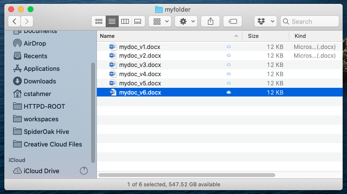
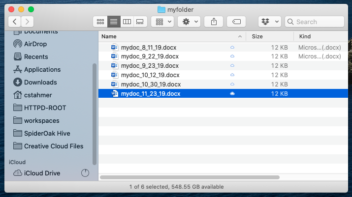

1. Getting Started#
Learning Goals
After this lesson, you should be able to:
Explain the purpose of using a version control system (VCS)
Explain the difference between centralized and distributed version control
Explain what a repository is
Explain what Git is
Initialize a Git repository
Check the status of a Git repository
Explain what the Git working tree and staging area are
Inspect and stage changes to a Git repository
Commit changes to a Git repository
View the history of commits in a Git repository
Restore an old version of a file from a commit
1.1. What is Version Control?#
Version control is the process of storing and organizing multiple versions (or copies) of files on your computer. Approaches to version control range from simple to complex and they can involve the use of both manual and automatic workflows.
Chances are good that you’re already doing some kind of version control yourself. You might have a directory somewhere on your computer that looks something like this:

Or perhaps this:

This is a rudimentary form of version control where it’s completely up to you to name, save, and keep track of multiple versions of a file. This filesystem approach works minimally well, in that it does provide you with a history of file versions theoretically organized by their time sequence. But this system provides no information about how the file has changed from version to version, why you might have saved a particular version, or specifically how the various versions are related. This approach is also subject to human error. It’s easy to make a mistake when naming a file version, or to go back and edit a file without saving a new copy.
1.1.1. Version Control Systems#
A version control system (VCS) is software designed to automate version control. Version control systems originated in the software development community, where it’s common for many people to work on the same file, sometimes synchronously, amplifying the need to track and understand revisions. But nearly all types of computer files, not just code, can be tracked using modern version control systems.
Historical Note
IBM’s OS/360 IEBUPDTE software update tool is widely regarded as the earliest and most widely adopted precursor to modern version control systems. Its release in 1972 of the Source Code Control System (SCCS) package marked the first fully-fledged system designed specifically for software version control.
Most version control systems keep track of changes to a collection of files called a repository. Generally, a repository (or repo) is just a directory where you’ve set up a version control system to keep track of changes to the contents. A repository can contain any number of files and subdirectories.
Tip
How many repositories to create is up to you, and depends on how you like to work, but we recommend that you create a separate repository for each distinct project.
In order to make it easy to collaborate, most version control systems also provide a way to create multiple copies of a repository and share changes between them. Version control systems can be divided into two categories based on how they do this:
Centralized version control systems store the repository and its history on a single computer. This computer is usually a server, a computer connected to the Internet or some other network. Users can check out a copy of the repository from the server, make changes, and then check in their changes with the server. The server is the sole authority on the repository’s history. You can think of this as a “hub and spoke” model, where the server is the hub and users are the spokes. This is the oldest kind of version control system.
Distributed version control systems treat each copy of the repository as an authority on the repository’s history, and provide ways to sync changes and resolve conflicts between copies. As two different users make changes to their copies of the repository, the copies will diverge if both users edit the same file. The divergence will remain in place until the two copies are synced, at which time the VCS merges the two different versions of the file into a single version that reflects the changes made by both users. You can think of this as a “network” model (like a social network).
Centralized VCS provide a very ordered and controlled universe. They ensure users have access to the most recent version of every file in the repository, which reduces the potential for conflicting changes to files.
Historical Note
Early centralized version control systems typically required users to check out individual files or directories rather than entire repositories, and only allowed one user to check out a given file at time. This prevented conflicting edits, but made it difficult to work concurrently.
On the other hand, distributed VCS offer greater flexibility. They allow users to work alone or in small groups, work offline, or work on experimental changes over an extended period without losing the benefits of version control. These characteristics facilitate collaborative work. Moreover, a distributed VCS can be used in a centralized way, where one copy of the repository is treated as the final authority on the repository’s history. This gives users the best of both worlds, by allowing some to sync directly with each other while others sync with this authoritative copy.
The most popular VCS today is Git, a distributed VCS. Some polls estimate that more than 90% of all developers use Git. A few other version control systems in use today include Mercurial, Subversion, Perforce, and Plastic SCM. Many document editors, such as Google Docs and Microsoft Word, also have built-in version control systems. Each of these systems offers a twist on version control, differing sometimes in the area of user functionality, sometimes in how they handle things on the back-end, and sometimes both. In this reader, we’ll focus on Git.
Important
Git is available for Windows, macOS, and Linux.
Install Git by following the instructions for your computer’s operating system:
On Windows, download Git from the Git downloads page. We recommend the default installation options, which also install Git Bash. You’ll need Git Bash to follow along with this workshop.
On macOS, there are many ways to install Git. The easiest is generally to install Xcode by opening a terminal and entering:
git --version
Then follow the prompts to install Xcode. If you prefer not to install Xcode (it is quite large), installing Git with a package manager such as Homebrew, MacPorts, or Pixi is also okay.
On Linux, we recommend installing Git with your distribution’s package manager (many distributions install Git by default). Installing Git with a user-level package manager such as Pixi is also okay.
You can also find more information about how to install Git in the section Installing Git of the book Pro Git by Chacon and Straub. Pro Git is an excellent reference for all things Git, so much so that a digital version is available for free on the Git website.
1.2. Configuring Git#
When you save changes to a repository, Git will automatically sign the changes with your name and email. In collaborative projects, these signatures are important for determining who made which changes. Thus the first time you use Git, you need to set your name and email.
We recommend that you configure Git with your real name (given name and surname) and a valid email address. These serve the same purpose in Git as they would on a publication: they ensure you receive credit for your work and give people a way to contact you about it. Git is open-source, community-developed software, so it won’t share your name and email address with spammers, but the information will be visible on any changes you make to public repositories.
Note
If you’re not comfortable attaching your real name to work you do with Git, a reasonable alternative is to use an alias you control, such as your GitHub username. Section 2.1 explains more about GitHub.
Likewise, if you don’t want to attach your primary email address to work you do with Git, set up a new email address and use that. Don’t make up a fake email address—someone else could take credit for your work or even impersonate you.
To set your name in Git, open a terminal and type:
git config set --global user.name "YOUR_NAME"
Replace YOUR_NAME with your name, keeping the quotes. Then press Enter. If
you make a mistake, don’t worry: you can run this command to change your name
as many times as you need.
Let’s break down what the command means. All Git commands begin with git
followed by the name of a subcommand. The command to set Git’s configuration
options is git config set. The --global argument makes the command set
options globally (that is, for all of your repositories). Git stores your name
under the user.name configuration option. The final argument is the new value
for user.name. So the command sets user.name for all repositories to the
name you put inside the quotes.
The related command git config get gets the value of an option. You can use
this to check how Git is configured. For instance, to check what Git thinks
your name is:
git config get user.name
Tip
You can view the documentation for any subcommand by adding --help to the
end. For instance, to get help with the git config subcommand, run git config --help.
Git stores your email address under the user.email configuration option. So
to set your email, type:
git config set --global user.email "YOUR_EMAIL"
Replace YOUR_EMAIL with your preferred public email address.
Finally, we suggest that you change the default branch name from master to
main. You’ll learn more about what branches are later, but we advise making
this change now. For too long the computing industry has relied on offensive
terms like “master” and “slave” to describe technology, and changing such terms
is part of a wider push to move away from the framework they
imply. This is a small change, but we at the DataLab believe that, in all
instances, language matters.
To change the default branch name to main, run:
git config set --global init.defaultBranch main
See also
This section is based on the section First-Time Git Setup of the book Pro Git.
1.3. Creating a Repository#
Now that we’ve established what version control systems are, and you’ve configured Git, it’s time to create a repository.
Open a terminal and navigate to your home directory:
cd
To initialize a repository called my_first_repository, enter:
git init my_first_repository
Git will reply with a message like:
Initialized empty Git repository in /home/USERNAME/my_first_repository/.git/
When you run the git init command, Git first checks whether the specified
directory (my_first_repository/) exists, and creates it if it doesn’t. Then
Git makes the directory a repository by creating a hidden .git/ subdirectory.
This subdirectory is where Git will store the history of the repository.
Caution
The .git/ subdirectory is hidden for a reason. Let Git manage its contents.
Avoid creating or modifying files and directories inside .git/, as this might
break your repository. If you delete .git/, your repository will no longer be
a repository—it will just be an ordinary directory.
Now let’s check that Git actually recognizes my_first_repository/ as a
repository. First, navigate to the directory:
cd my_first_repository/
You can use git status to check the status of a repository. Try running it
for the new repository:
git status
Since the directory is a repository, Git will respond with output like:
On branch main
No commits yet
nothing to commit (create/copy files and use "git add" to track)
We’ll save branches for a different lesson. Skipping to the second part of the message, Git says that there are no “commits” yet. A commit is a saved snapshot (or version) of the repository. You’ll learn how to make a commit soon, but right now, it makes sense that there are no commits yet, since you just created the repository. Finally, in the third part of the message, Git says that there is nothing to commit. This also makes sense, since we haven’t created any files in the repository yet.
Note
When Git doesn’t recognize a directory as a repository, the output from git status (and most other git subcommands) instead looks like:
fatal: not a git repository
If you see this message, your working directory is not a Git repository. Most likely you meant to run the command in a different directory.
1.4. Adding & Committing Changes#
Once you’ve created a repository, you’ll want to copy some files into it, or create new files, so that you can use Git to track their versions.
In my_first_repository/, let’s create a file with a short self-introduction.
Start by opening a text editor.
Choosing a Text Editor
Even if you primarily use software with graphical user interfaces, it’s good to be familiar with a command-line text editor. You can use the editor for quick edits while at the command-line and on computers that don’t provide a graphical environment (as is often the case for cloud and high-performance computing resources).
The GNU nano text editor is a simple and easy-to-learn. It’s typically
pre-installed on Linux and bundled with Git Bash on Windows. On macOS, Pico,
nano’s almost-identical predecessor, is pre-installed. You can run nano with
the nano command (or run Pico with the pico command).
If you like the simplicity of nano but want features like modern keyboard shortcuts and syntax highlighting by default, install the micro editor. It’s available for all major operating systems; see the website for details.
Vim is a powerful, customizable text editor, but takes some time to learn.
Vim (or its predecessor vi) is typically pre-installed on macOS and Linux, and
is bundled with Git Bash on Windows. You can run Vim with the vim command (or
run vi with the vi command).
Popular alternatives to Vim with similar features include GNU Emacs and Neovim.
In the text editor, enter a friendly greeting, like this one:
Hi, I'm Nick, and this is my repository!
Your greeting doesn’t need to be identical, and you can change the name to your
name. Save this as hello.txt in the my_first_repository/ directory. Then
check the status of the repository again:
git status
On branch main
No commits yet
Untracked files:
(use "git add <file>..." to include in what will be committed)
hello.txt
nothing added to commit but untracked files present (use "git add" to track)
Git notices the new file, hello.txt, and says it’s untracked, which means
Git doesn’t have any history for it. You just created the file and haven’t
committed it yet, so it makes sense that there’s no history.
Let’s commit hello.txt now. The first step is to add the file to Git’s
staging area (or index). The staging area is a virtual space for
preparing commits, where you can select which changes to include in the commit.
It might help to imagine the staging area as a box 📦 that you’re packing up to
store or to send to a friend.
The git add command adds changes to the staging area. Go ahead and add the
changes to hello.txt:
git add hello.txt
Now check the status of the repository again:
git status
On branch main
No commits yet
Changes to be committed:
(use "git rm --cached <file>..." to unstage)
new file: hello.txt
Git reports that the changes to hello.txt are in the staging area and ready
to be committed. It also lists the command to remove the changes from the
staging area.
Tip
Take advantage of the staging area to curate the contents of your commits. Putting distinct work in distinct commits makes it easier to inspect (and occasionally undo) the work.
Tip: Unstaging Changes
In a new repository without any commits, the command to unstage changes is git rm --cached.
In a repository that has commits, the command to unstage changes is git restore --staged. This is the command to remember, since most repositories
have commits.
The distinction can trip up even experienced Git users. If you want a single unstage command you can use under any circumstances, run:
git config set --global alias.unstage "reset --"
Then you can use git unstage whenever you want to unstage changes.
You can make a commit with the git commit command. Enter the command:
git commit
In response, Git will open a text editor (Vim by default) with the following text:
# Please enter the commit message for your changes. Lines starting
# with '#' will be ignored, and an empty message aborts the commit.
#
# On branch main
#
# Initial commit
#
# Changes to be committed:
# new file: hello.txt
#
Git will then wait for you to write a commit message, a description of what the commit changes, at the beginning of the text. The first line of the commit message must be a summary of the commit in 72 characters or less. You can optionally follow this with a blank second line and then a detailed description of the commit beginning on the third line.
Important
Strive for clear and meaningful commit messages. If you feel like the changes in a commit are too numerous or complicated to summarize in one line, use the optional detailed description.
Commit messages are the history of your project. Neglecting them might save time in the short run, but in the long run it will make understanding the project’s evolution much more difficult and time-consuming for future you and your collaborators.
Tip: The 50/72 Rule
Many programmers follow the 50/72 rule, which says that the first line of a commit message should be 50 characters or less and written in the imperative mood. For example:
Fix typos in the main text.
Subsequent lines should be 72 characters or less. The rule makes commit messages easier to read and understand, especially in the terminal and on narrow screens.
We recommend following the 50/72 rule, but there are situations where doing something else is justified. The best approach is to talk to your collaborators about specific conventions they want to follow, and check in with them about exceptions to the conventions.
Edit the commit message to look like this:
Add a friendly greeting.
# Please enter the commit message for your changes. Lines starting
# with '#' will be ignored, and an empty message aborts the commit.
#
# On branch main
#
# Initial commit
#
# Changes to be committed:
# new file: hello.txt
#
Finally, to let Git know that you’re done, save the commit message and exit the text editor.
Note
If you exit the text editor without saving, Git will cancel the commit. This is helpful if you change your mind about making a commit or forget to add something to the staging area.
Git will print some output to confirm that the commit was created:
[main (root-commit) 0f5c79d] Add a friendly greeting.
1 file changed, 1 insertion(+)
create mode 100644 hello.txt
Important details in the output include:
A hash that uniquely identifies the commit (
0f5c79dabove, but yours will be different)The commit message
The number of files changed
A list of which files were changed (
hello.txtin this case)
Run git status to see how the output has changed now that you’ve made a
commit:
git status
On branch main
nothing to commit, working tree clean
Git reports that there’s nothing to commit, and that the “working tree” is clean. The working tree consists of the files and directories you actually have in your repository. The working tree is clean if it’s identical to the most recent commit, meaning you haven’t changed anything since that commit.
Important
Remember, saving your work in Git is a two step process:
git add(for each file or directory with changes you want to save)git commit
It’s a good idea, but not required, to run git status after the first step,
to check that you’ve added all of the changes you meant to add to the staging
area.
1.4.1. Moving a File#
To get more practice making commits, suppose we want to move the file
hello.txt to README.md, since README.md is conventionally the first file
people read when they start working with an unfamiliar repository. Use the mv
shell command to move the file:
mv hello.txt README.md
Now check the status of the repository:
git status
On branch main
Changes not staged for commit:
(use "git add/rm <file>..." to update what will be committed)
(use "git restore <file>..." to discard changes in working directory)
deleted: hello.txt
Untracked files:
(use "git add <file>..." to include in what will be committed)
README.md
no changes added to commit (use "git add" and/or "git commit -a")
Git notices that hello.txt is gone, and also that there’s a new file
README.md. Since README.md is untracked, Git doesn’t recognize that it’s
the same file as the old hello.txt. Go ahead and add the changes to
README.md to the staging area:
git add README.md
Add the changes to hello.txt as well:
git add hello.txt
It might seem counterintuitive to add hello.txt, since it no longer exists.
What you should keep in mind is that git add adds changes to the staging
area, not files, and moving (or removing) a file is a change to that file.
Important
Removing/deleting a file is a change to that file, just like creating, editing, or moving the file.
If you want to delete a file called FILE from a repository, first delete the
file, then run git add FILE to add the change to the staging area, and
finally run git commit to make a commit.
Deleted files remain in the repository’s history, so it’s possible to restore them later.
Now check the status:
git status
On branch main
Changes to be committed:
(use "git restore --staged <file>..." to unstage)
renamed: hello.txt -> README.md
After adding the changes to both files, Git correctly recognizes that the file
was moved/renamed. Go ahead and commit the change with the commit message
Move hello.txt to README.md.:
git commit
[main 4f57023] Move hello.txt to README.md.
1 file changed, 0 insertions(+), 0 deletions(-)
rename hello.txt => README.md (100%)
If you check the status now, you’ll see that the working tree is once again clean.
Tip
You can also make commits without opening a text editor. Use this command:
git commit -m "COMMIT_MESSAGE"
Replace COMMIT_MESSAGE with your commit message. You can’t provide a detailed
description when you commit this way, so it’s only appropriate for small,
simple commits.
1.5. Exploring History#
Now that you’ve made some commits, let’s take a look at the repository’s history. To view the log of commits to a repository, enter the command:
git log
commit 4f5702364c155faa260080671b63177550347ea0 (HEAD -> main)
Author: YOUR_NAME <YOUR_EMAIL>
Date: Wed Jan 8 14:32:21 2025 -0800
Move hello.txt to README.md.
commit 0f5c79d0494763a31ade6a2514dd389f3f1eb1b4
Author: YOUR_EMAIL <YOUR_EMAIL>
Date: Wed Jan 8 13:59:08 2025 -0800
Add a friendly greeting.
For each commit, the log lists the hash, name and email of the author, timestamp, and commit message.
Note
When a repository has a long history, git log will display the commits in a
scrolling window. You can use the up and down arrow keys to scroll, and type
q (for quit) to return to the terminal.
Let’s make one more commit: we’ll add a title to the README.md file. Open the
file with a text editor and add a title, so that it looks like this:
# My README
Hi, I'm Nick, and this is my repository!
When you’re finished, save the file. As usual, Git notices that something in the repository has changed:
git status
On branch main
Changes not staged for commit:
(use "git add <file>..." to update what will be committed)
(use "git restore <file>..." to discard changes in working directory)
modified: README.md
no changes added to commit (use "git add" and/or "git commit -a")
You can view the difference, or diff between the working tree and the most
recent commit with git diff:
git diff
diff --git a/README.md b/README.md
index cd08755..4e3eb18 100644
--- a/README.md
+++ b/README.md
@@ -1 +1,3 @@
+# My README
+
Hello world!
The git diff command prints a diff for each file that’s been changed. In each
diff, lines added since the last commit are prefixed with +, while lines
removed since the last commit are prefixed with -. For context, each diff
usually also includes a few lines that didn’t change (no prefix). It’s a good
idea to check git diff before adding files to the staging area, so that you
know what you’re adding.
Tip
If you’ve changed a lot of files, the output from git diff can be
overwhelming. You can use the command git diff PATH to view only the changes
to the file or directory at PATH.
You can also use git diff --staged to see the difference between files in the
staging area and the last commit.
There are many other ways to use git diff; check the documentation (git diff --help) to learn more.
Add and commit the changes. After you finish, you should have a third commit in
the repository history (git log) that looks something like this:
commit e15d8c1355f16c26fe00354855c24bff3626fc1b (HEAD -> main)
Author: YOUR_NAME <YOUR_EMAIL>
Date: Wed Jan 8 15:35:02 2025 -0800
Add title.
1.6. Restoring Old Versions of Files#
Suppose you decide you don’t like the title you added to README.md in
Section 1.5. If you want to change the title to something
different, the best approach is to edit the file and make a new commit. On the
other hand, if you want to restore an older version of the file, manual editing
is tedious and error-prone.
Instead, use the git restore --source command to restore a file to how it was
in a particular commit.
To demonstrate this, let’s restore README.md to how it was in the commit
before we added a title. First check git log to get the commit’s hash:
commit e15d8c1355f16c26fe00354855c24bff3626fc1b (HEAD -> main)
Author: YOUR_NAME <YOUR_EMAIL>
Date: Wed Jan 8 15:35:02 2025 -0800
Add title.
commit 4f5702364c155faa260080671b63177550347ea0
Author: YOUR_NAME <YOUR_EMAIL>
Date: Wed Jan 8 14:32:21 2025 -0800
Move hello.txt to README.md.
commit 0f5c79d0494763a31ade6a2514dd389f3f1eb1b4
Author: YOUR_NAME <YOUR_EMAIL>
Date: Wed Jan 8 13:59:08 2025 -0800
Add a friendly greeting.
In this example, the hash begins 4f5702, but it will be different for your
commit. As you can see from git log, the full hash for each commit is quite
long. For most Git commands that require a hash, you can just use the first few
digits. Git will let you know if it needs more digits to disambiguate which
commit you mean.
To restore README.md to how it was in commit 4f5702, run:
git restore --source 4f5702 README.md
Make sure to replace 4f5702 with the actual hash for your commit.
Danger
Be careful with git restore: when you restore a file, any uncommitted
changes you’ve made to the file will be erased, and there’s no undo.
If you just want to see what a file looked like in a previous commit, use git show HASH:FILE instead, where HASH is the commit’s hash and FILE is the
path to the file.
After running the command, take a look at README.md with your text editor.
You should see that it no longer has the title. And if you look at the status
of the repository, you’ll see that Git noticed the change:
git status
On branch main
Changes not staged for commit:
(use "git add <file>..." to update what will be committed)
(use "git restore <file>..." to discard changes in working directory)
modified: README.md
no changes added to commit (use "git add" and/or "git commit -a")
As with any other change, you can add and commit this change if you want to save it in the repository’s history.
Tip: Undoing Commits
If you want to undo an entire commit, use git revert rather than git restore. Specifically, run:
git revert HASH
Replace HASH with the hash of the commit you want to revert.
Git reverts a commit by creating a new commit, called a revert commit, with
changes exactly the opposite of the original: lines that were added get removed
and lines that were removed get added. Because of this, Git will prompt you for
a commit message when you run git revert; it’s fine to use the default
message.